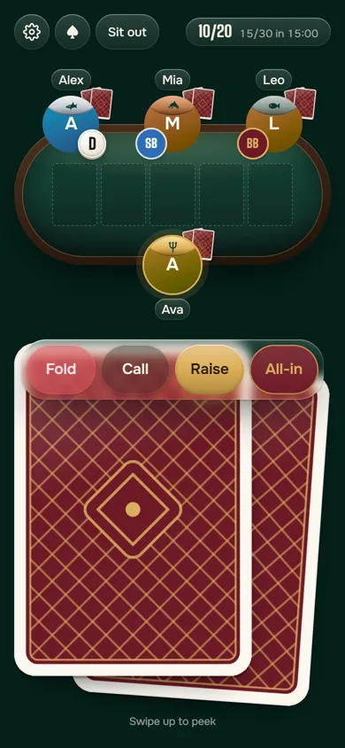
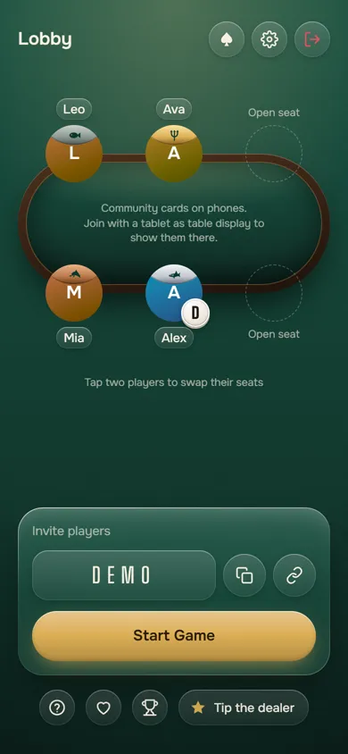
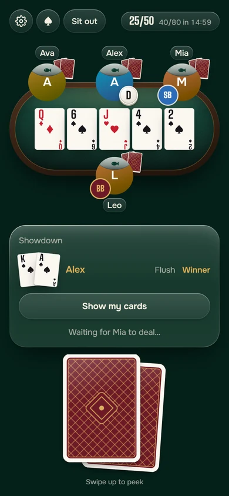
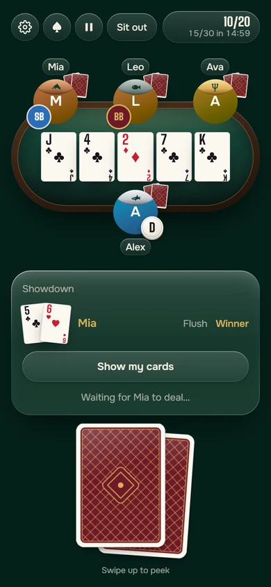
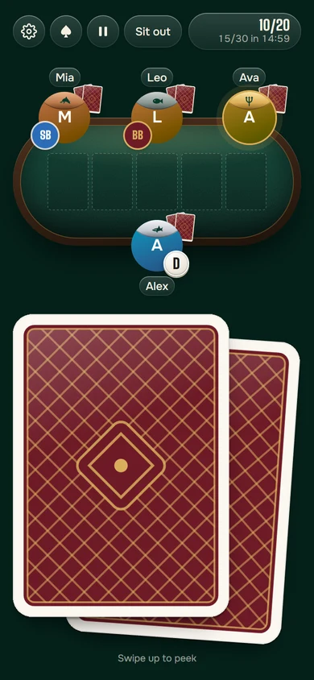
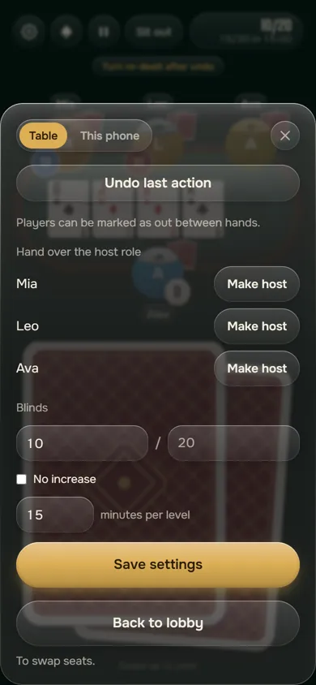
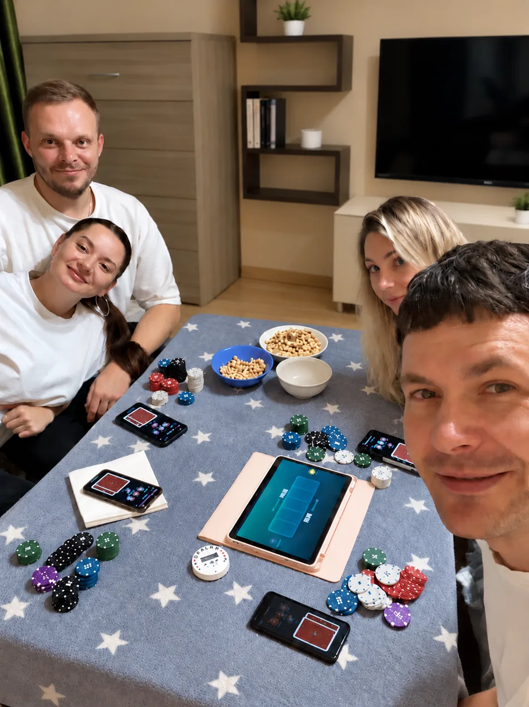

Сегодня никому не придётся сдавать.
Карты раздаёт бесплатное мини-приложение в Telegram — сразу на телефоны игроков. Фишки двигаете руками, как раньше.
Создать столБесплатно · в Telegram или в браузере
Покер остаётся живым
Вы сидите за одним столом и видите лица друг друга, а с незнакомцами приложение никого не сводит. На телефоне — ваши две карты, а в ваш ход — кнопки торговли. Карту подсматриваете, загибая уголок на экране, и жмёте Check или Raise.
Фишки двигаете сами: приложение их не считает и даже не знает, кто сколько поставил. Общие карты можно вывести на планшет, ноутбук или телевизор посреди стола — тогда их видят все сразу.

Первая раздача — за три шага
- 1
-
2
Позовите друзей.
Скиньте код или ссылку либо покажите QR-код. Мест за столом — до шести. Другу без Telegram хватит ссылки и своего имени.

-
3
Раздавайте.
Нажали — и у каждого на телефоне по две карты. Когда круг торговли закрыт, приложение само выкладывает флоп, потом тёрн и ривер.
Меньше ожидания между раздачами
Пока один тасует, все ждут.
Колоду тасует и сдаёт сервер по одному нажатию. Уметь сдавать за столом не нужно никому.

Сожгли лишнюю карту — и пошёл спор.
Карта случайно не перевернётся, и лишнюю никто не сожжёт: какой борд на экране, такой и в игре.

«Стоп, а чей ход?»
Приложение ведёт очерёдность торговли по правилам холдема. Фишка дилера, блайнды и таймер до их повышения — на экране.

Нажал не ту кнопку.
Хост отменит последнее действие.

Первая игра? Включите режим новичка
В режиме новичка приложение подсказывает по ситуации, а шпаргалка комбинаций всегда под рукой. Посреди раздачи не придётся гуглить, что старше — стрит или флеш. Если телефон на русском, подсказки тоже будут на русском.
От шансов на доигрыше до итогов вечера
Когда кто-то пошёл ва-банк и борд доигрывается, на экране видно, у кого какие шансы. На вскрытии экран победителя показывает, кто выиграл раздачу, а в конце вечера есть статистика.
Раздачу, в которую никто не поверит, можно показать
После яркого момента приложение собирает картинку 9:16 — для сторис или для чата компании в Telegram. На ней — с какими шансами вы выиграли, редкая комбинация, удачный блеф или итог вечера. Закрытые карты соперников на картинку не попадают никогда.
Вопросы и ответы
Нужен ли Telegram?
Не обязательно. Poker Dealer — мини-приложение в Telegram, но работает и в браузере: открыть в браузере. Другу без Telegram хватит ссылки-приглашения или QR-кода: он открывает их и вводит имя. Скачивать из магазина приложений ничего не нужно.
Сколько стоит?
Нисколько, Poker Dealer бесплатный. При желании можно оставить разработчику чаевые звёздами Telegram — это необязательно, приложение остаётся бесплатным в любом случае.
Сколько человек может играть?
От двух до шести, все за одним столом.
Нужны ли фишки?
Да, свои. Приложение заменяет только колоду: фишки оно не считает и размер ставок не знает.
Можно ли играть на деньги в приложении?
Нет. Poker Dealer не работает с деньгами и не считает фишки — он раздаёт карты и следит, чей ход.
Приложение на русском?
Интерфейс на английском. На русском — подсказки режима новичка и картинки «поделиться», если телефон на русском. Кнопки торговли — Check, Call, Bet, Raise, Fold, All-in.
На следующей игре карты раздадут телефоны
Создайте стол, киньте друзьям ссылку — и раздавайте.
Создать столБесплатно · в Telegram или в браузере
